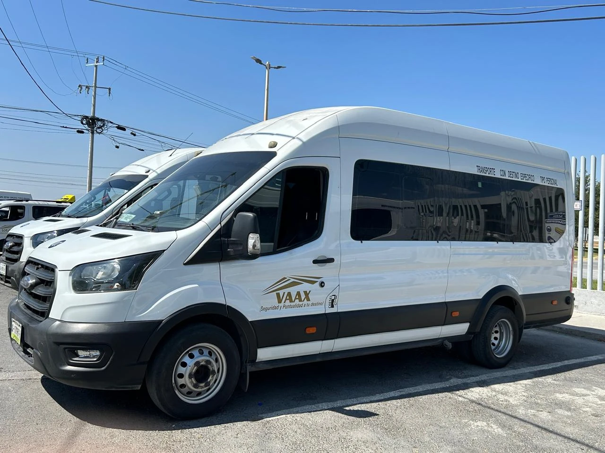
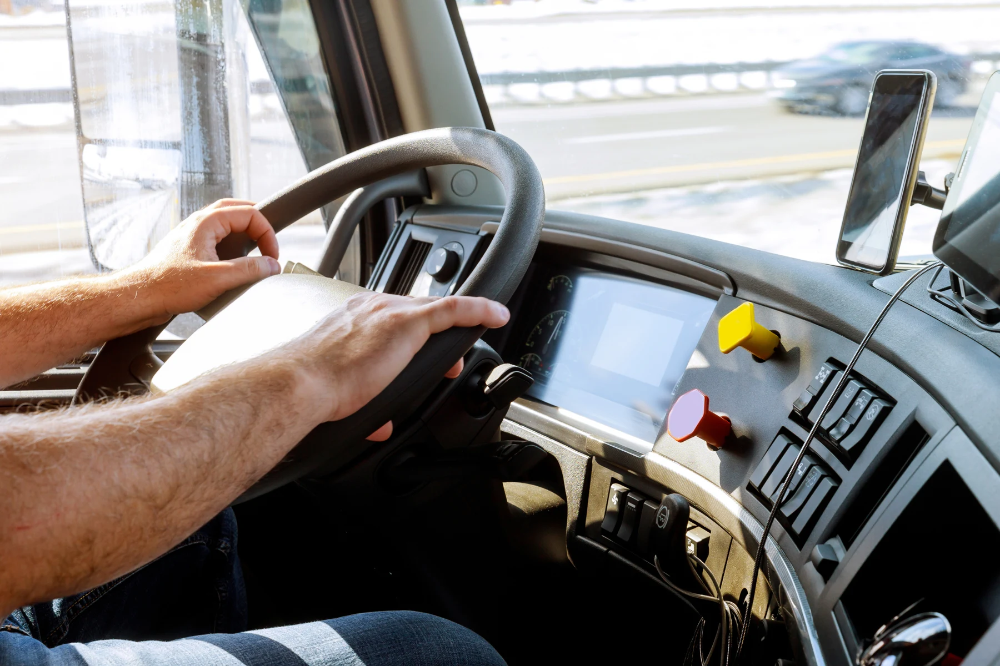
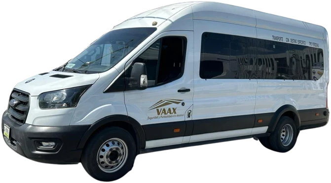

TRANSPORTE DE PERSONAL PARA EMPRESAS
El talento mueve
tu empresa.
Nosotros movemos
a tu talento.
Soluciones de transporte de personal diseñadas para empresas que valoran la seguridad, puntualidad y continuidad de sus operaciones.
EL SIGUIENTE DESTINO: TU TRANQUILIDAD

01 / NOSOTROS
Más que un traslado.
Una conexión de confianza.
Desde 2011 conectando personas con sus centros de trabajo.
En Transportes VAAX acompañamos a empresas del sector industrial y comercial con soluciones de transporte de personal que se adaptan a su operación. Cada ruta de transporte empresarial tiene un propósito: que tus empleados lleguen con seguridad y tu empresa siga avanzando.
Seguridad
Cuidamos lo que más importa: las personas.
Puntualidad
Entendemos el valor de cada jornada.
Compromiso
Atención directa y soluciones a tu medida.
02 / SOLUCIONES DE MOVILIDAD
Tu operación marca el rumbo.
Nosotros trazamos la ruta.
Un servicio integral, pensado para las personas y diseñado alrededor de tu empresa.
CADA EMPRESA, UNA RUTA
Transporte de personal.
Hecho a tu medida.
Rutas de transporte para empresas que conectan a sus trabajadores con su lugar de trabajo.
Hablemos de tu operación01Visibilidad en el recorrido+
Monitoreo GPS y cuenta espejo para el cliente: seguimiento de las unidades para acompañar cada trayecto.
GPSSEGUIMIENTO02Comodidad para tu equipo+
Unidades climatizadas, asientos cómodos y sanitización. El bienestar de las personas también es parte del camino.
CLIMATIZACIÓNSANITIZACIÓN03Respaldo en cada traslado+
Operadores calificados y responsables, seguro de viaje y puntos previamente autorizados y monitoreados.
SEGURO DE VIAJEOPERADORES CALIFICADOS04Coordinación que acompaña+
Comunicación entre las unidades, la base y las unidades de apoyo, con atención directa y seguimiento continuo.
COMUNICACIÓN OPERATIVA03 / NUESTRA FLOTILLA
Diferentes equipos.
El mismo compromiso.
Unidades de 7 a 37 pasajeros.
La opción adecuada depende de las necesidades de tu ruta.

01 / 03
Conectamos tu equipo
Movilidad de personal para tu operación diaria.
Fotografías de la presentación oficial. Disponibilidad y capacidad por unidad sujetas a confirmación.
04 / SEGURIDAD Y TECNOLOGÍA
La tranquilidad
también viaja
contigo.
Personas preparadas, comunicación y tecnología para dar seguimiento a lo que sucede en el camino.
Seguimiento por GPS
Monitoreo de unidades y cuenta espejo para el cliente.
Personas al cuidado de personas
Operadores calificados y seguro de viaje.
Siempre en coordinación
Comunicación con base y unidades de apoyo.
Representación gráfica conceptual de una ruta.
No corresponde a un sistema de monitoreo en vivo.
05 / ASÍ AVANZAMOS JUNTOS
De tu necesidad
a una ruta en marcha.
Una forma sencilla de entender cómo podemos acompañar a tu empresa.
Te escuchamos
Conocemos las necesidades de transporte de tu empresa y de tu equipo.
Trazamos la propuesta
Diseñamos una propuesta de rutas personalizada para tu operación.
Coordinamos el servicio
Organizamos los detalles para poner en marcha los traslados.
Seguimos contigo
Brindamos atención directa y seguimiento continuo al servicio.
06 / CONVERSEMOS
Tu operación
no se detiene.
Tu transporte
tampoco debería.
Cuéntanos qué necesita tu equipo. Demos el primer paso hacia una solución de movilidad a tu medida.
juan.rdz@transportesvaax.comAtención comercial · Juan Rodríguez
Contacto directo · dos líneas a tu servicio
Ambos teléfonos están vigentes. Elige la línea de tu preferencia para consultar sobre tu servicio.